Candidate List 20260825Last night — ZTF: 1,156 passed basic cuts (54 young) · LSST: 0 passed basic cuts (0 young)Previous Day Next Day
Section 1: New Sources (age<1d) Section 2: Old (1-5d) sources observed last nightplaceholder
Section 2: Older Sources Observed Last Night (6)
0. [ZTF] ZTF26abpgdyr (FBOT?) [Back to Top] [Share] [Trigger Swift] [Fritz Alert] [Fritz Source] [Lasair]RA, Dec: 308.87619, 51.59002 20h35m30.29s, 51d35m24.06sGalactic (l, b): 88.73487, 6.59014 ext(g-r) = 0.665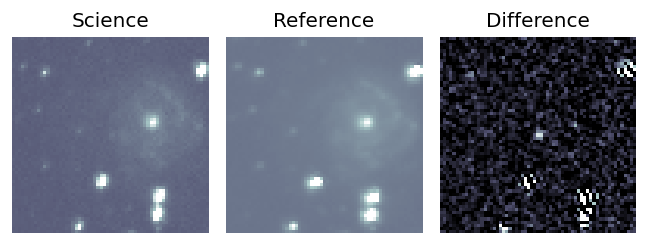
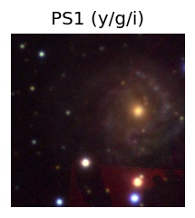

TESS: Sectors [ 15 16 41 55 56 75 76 82 83 120 121]
PS1: 1 source in 3 arcsec Closest: d = 7.62 arcsec photoz=0.09+/-0.01 peak abs mag = -20.90
LegacySurvey: 0 sources in 3 arcsec
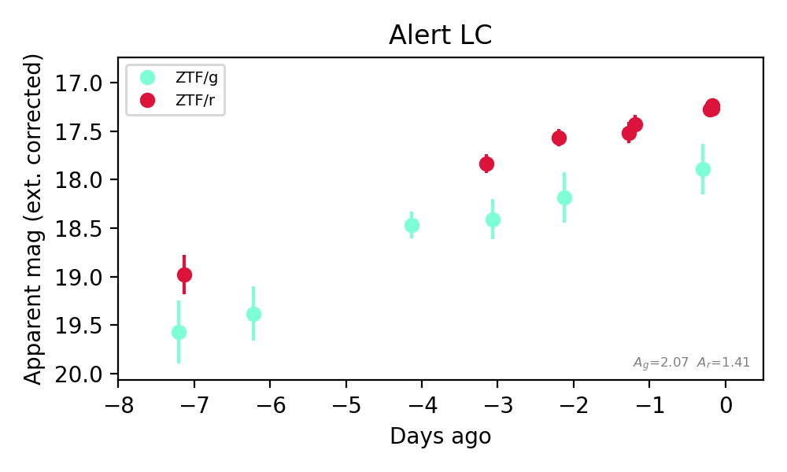
Extinction-corrected gr color:
From alerts: 0.64 +/- 0.26 mag
Consistent with synchrotron, g-r>0!
Rise Rate:
g: 0.24 mag/day
r: 0.22 mag/day
Fade Rate:
1. [ZTF] ZTF26abpsgoi (FBOT?) [Back to Top] [Share] [Trigger Swift] [Fritz Alert] [Fritz Source] [Lasair]RA, Dec: 12.43078, -19.73569 0h49m43.39s, -19d-44m-8.49sGalactic (l, b): 119.79869, -82.597 ext(g-r) = 0.019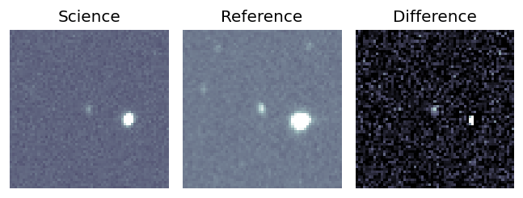
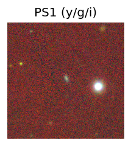
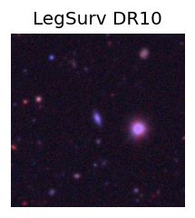
TESS: Sectors [ 3 30 107]
PS1: 0 sources in 3 arcsec
LegacySurvey: 1 sources in 3 arcsec Closest: d = 0.69 arcsec, 19.6 deg (east of north) photoz=0.12 (68% bounds 0.11, 0.14), type=SER peak abs mag (ext. corrected) = -19.68 (68% bounds -19.37, -19.99)
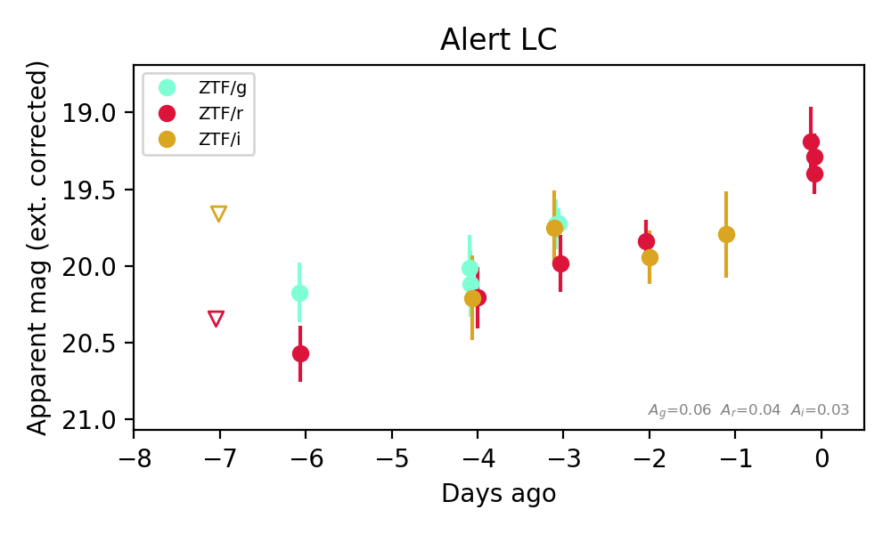
Extinction-corrected gr color:
From alerts: -0.26 +/- 0.2 mag
Extinction-corrected gi color:
From alerts: -0.03 +/- 0.26 mag
Extinction-corrected ri color:
From alerts: -0.1 +/- 0.22 mag
Consistent with synchrotron, g-r>0!
Rise Rate:
g: 0.17 mag/day
r: 0.21 mag/day
Fade Rate:
2. [ZTF] ZTF26abpwzbm (FBOT?) [Back to Top] [Share] [Trigger Swift] [Fritz Alert] [Fritz Source] [Lasair]RA, Dec: 6.33488, 16.64354 0h25m20.37s, 16d38m36.76sGalactic (l, b): 113.95229, -45.77267 ext(g-r) = 0.077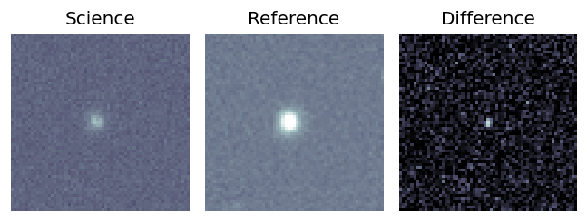
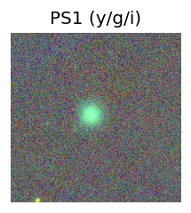
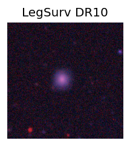
TESS: Sectors [57 84]
SDSS (<15 kpc):Found SDSS phot-z: z=0.08; peak abs mag = -18.42
PS1: 0 sources in 3 arcsec
LegacySurvey: 1 sources in 3 arcsec Closest: d = 1.95 arcsec, 72.3 deg (east of north) photoz=0.13 (68% bounds 0.12, 0.16), type=REX peak abs mag (ext. corrected) = -19.59 (68% bounds -19.39, -19.93)
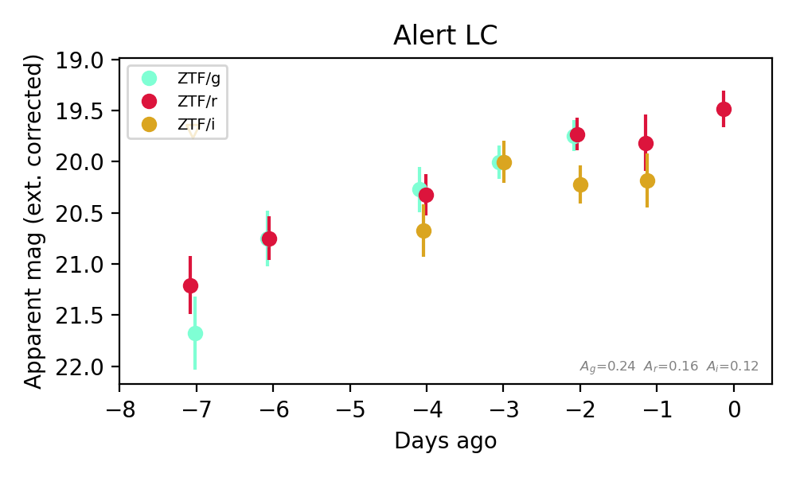
Extinction-corrected gr color:
From alerts: 0.02 +/- 0.22 mag
Extinction-corrected gi color:
From alerts: -0.48 +/- 0.24 mag
Extinction-corrected ri color:
From alerts: -0.37 +/- 0.38 mag
Consistent with synchrotron, g-r>0!
Rise Rate:
g: 0.32 mag/day
r: 0.23 mag/day
Fade Rate:
3. [ZTF] ZTF26abpyrfi (FBOT?) [Back to Top] [Share] [Trigger Swift] [Fritz Alert] [Fritz Source] [Lasair]RA, Dec: 262.39078, 15.40504 17h29m33.79s, 15d24m18.15sGalactic (l, b): 38.16292, 24.90856 ext(g-r) = 0.097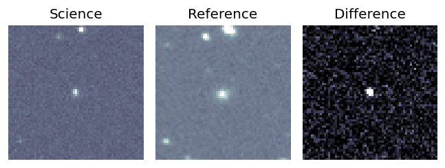
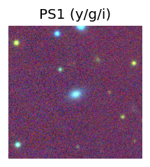
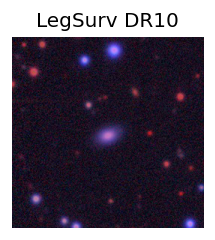
TESS: Sectors [ 25 26 52 53 79 118]
PS1: 0 sources in 3 arcsec
LegacySurvey: 1 sources in 3 arcsec Closest: d = 1.31 arcsec, 182.4 deg (east of north) photoz=0.09 (68% bounds 0.08, 0.11), type=SER peak abs mag (ext. corrected) = -19.95 (68% bounds -19.55, -20.37)
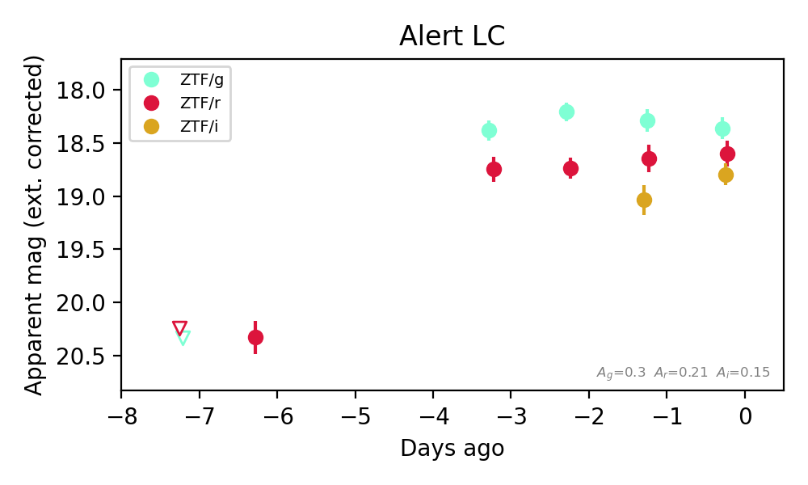
Extinction-corrected gr color:
From alerts: -0.24 +/- 0.16 mag
Extinction-corrected gi color:
From alerts: -0.43 +/- 0.15 mag
Extinction-corrected ri color:
From alerts: -0.2 +/- 0.16 mag
Rise Rate:
g: 0.5 mag/day
r: 0.37 mag/day
i: 0.11 mag/day
Fade Rate:
4. [ZTF] ZTF26abqfuje (Afterglow?) [Back to Top] [Share] [Trigger Swift] [Fritz Alert] [Fritz Source] [Lasair]RA, Dec: 306.76827, 42.66409 20h27m4.39s, 42d39m50.72sGalactic (l, b): 80.64167, 2.50954 ext(g-r) = 1.799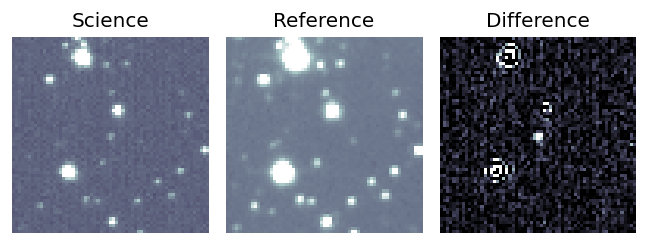
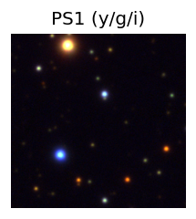

TESS: Sectors [ 14 15 41 55 56 75 76 120 121]
PS1: 0 sources in 3 arcsec
LegacySurvey: 0 sources in 3 arcsec
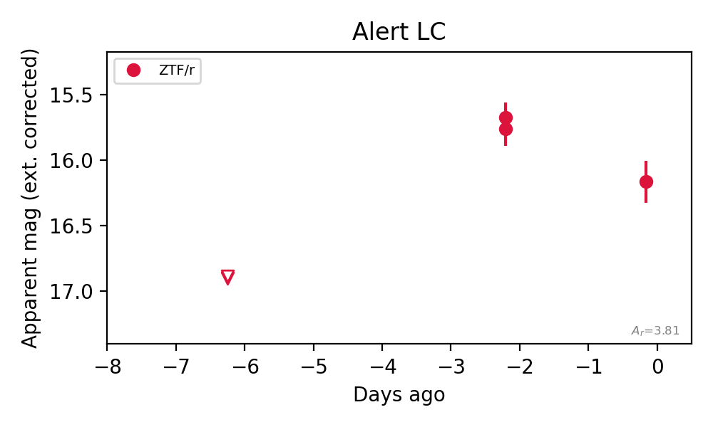
Rise Rate:
r: 0.3 mag/day
Fade Rate:
r: 0.22 mag/day
5. [ZTF] ZTF26abqqftw (Afterglow?) [Back to Top] [Share] [Trigger Swift] [Fritz Alert] [Fritz Source] [Lasair]RA, Dec: 288.55723, 23.43237 19h14m13.73s, 23d25m56.52sGalactic (l, b): 56.35127, 5.75401 ext(g-r) = 1.069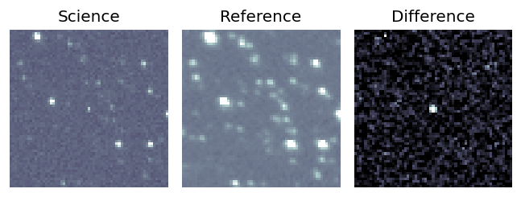
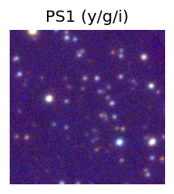

TESS: Sectors [ 14 40 54 80 81 119]
PS1: 1 source in 3 arcsec Closest: d = 4.59 arcsec photoz=0.46+/-0.03 peak abs mag = -25.03
LegacySurvey: 0 sources in 3 arcsec
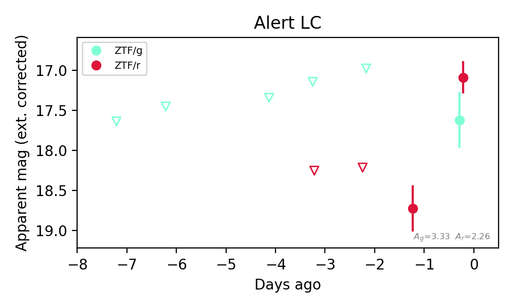
Extinction-corrected gr color:
From alerts: 0.54 +/- 0.41 mag
Consistent with synchrotron, g-r>0!
Rise Rate:
r: 1.62 mag/day
Fade Rate: